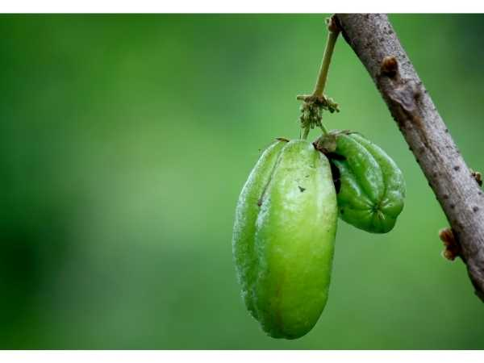

Averrhoa bilimbi
Common Names: Bilimbi, Cucumber Tree, Tree Sorrel, Kamias
Local Name: Pulicha Kaai (Tamil), Bilimbi (Malayalam), Irumban Puli (Tamil alternate)
Family: Oxalidaceae
Origin: Moluccas (Indonesia); widely naturalized across tropical Asia
Plant Type: Perennial evergreen tree
Variety: Species type — sour, cucumber-shaped fruit used as souring agent in cooking
Average Lifespan: 20–40 years
| Growth Habit | Small to medium evergreen tree with sparse, upright canopy; few main branches |
| Plant Size | 5–10 meters tall; narrow canopy spread 3–5 meters |
| Leaves | Alternate, pinnately compound, 11–37 leaflets, 2–7 cm each; sensitive to touch (fold at night) |
| Flowers | Small, dark red to purple, 1–1.5 cm; borne in clusters directly on trunk and main branches (cauliflorous) |
| Flower Characteristics | Cauliflorous; fragrant; blooms in flushes throughout the year |
| Fruit | Cylindrical, 4–10 cm long, cucumber-shaped; very sour, crisp, juicy; 5 shallow ridges |
| Fruit Color | Light green when young; yellowish-green when ripe; translucent flesh |
| Seed Characteristics | Small, flat, disc-shaped seeds (6–7 per fruit); brown |
| Root System | Shallow, spreading root system |
| Climate | Tropical; warm and humid; frost-intolerant |
| Temperature Range | 25–35°C ideal; damaged below 5°C; thrives in tropical heat |
| Rainfall Requirement | 1500–3000 mm annually; prefers high humidity |
| Soil Type | Well-drained loamy to sandy loam; tolerates various soils |
| Soil pH Preference | 5.5–7.0 |
| Sun Requirement | Full sun to partial shade (5+ hours daily) |
| Spacing | 4–6 meters between trees |
| Irrigation Method | Regular watering; drip or basin irrigation |
| Water Requirement | Moderate to high; prefers consistent moisture |
| Can it Grow in Pots? | Yes, in large containers (30+ liters); will fruit in pots |
| Fertilizer Schedule | 2–3 times per year; light feeding sufficient |
| Recommended Organic Fertilizers | Compost, vermicompost, neem cake |
| Pesticide Frequency | Rarely needed; generally pest-resistant |
| Recommended Organic Pesticides | Neem oil if needed; generally pest-free |
| Mulching Practice | Organic mulch around base; leaf litter recycling |
| Training System | Natural form; minimal training needed |
| Pruning Time | Any time; light pruning to shape |
| How to Prune | Remove dead branches; thin if too dense; manage height |
| Common Pests | Generally pest-free; occasional fruit fly, caterpillars |
| Common Diseases | Leaf spot (minor); generally disease-resistant |
| Disease Prevention & Remedies | Good air circulation; rarely needs treatment |
| Flowering Months | Year-round in tropics; multiple flushes |
| Fruiting Season | Year-round; prolific fruiter in humid tropical conditions |
| Days to Harvest | 45–60 days from flowering |
| Harvest Indicators | Fruit turns yellowish-green, slightly soft; harvest while still firm for cooking |
| Average Yield per Plant | 100–300 kg per tree per year (mature); extremely prolific |
| Pollination Type | Self-pollination and insect pollination |
| Pollination Notes | Self-fertile; bees assist pollination; high fruit set rate |
| Pollination Details | Self-fertile; insect-pollinated; cauliflorous flowering aids pollination |
| Propagation by Seeds | Seeds germinate in 1–3 weeks; seedlings fruit in 3–5 years |
| Propagation by Cuttings | Air layering effective; fruits in 2–3 years |
| Propagation by Grafting | Not commonly grafted; seed propagation is standard |
| Water Usage | Moderate; naturally sustained by tropical rainfall |
| Soil Conservation Practices | Leaf litter enriches soil; shallow roots benefit from mulching |
| Organic Practices Used | Naturally low-maintenance; minimal inputs needed |
| Companion Plants | Banana, coconut, curry leaf, drumstick |
| Biodiversity Benefits | Cauliflorous flowers attract diverse pollinators; fruit eaten by birds |
| Commercial Production Regions | Malaysia, Indonesia, Philippines, India (Kerala, Tamil Nadu), Sri Lanka |
| Market Uses | Souring agent in cooking, pickles, chutneys, fish curries |
| Processing Uses | Pickles, dried bilimbi, jam, juice, vinegar, traditional medicine |
| Market Value (Approx.) | ₹30–100 per kg; primarily local market |
| Symbolism | Common backyard tree in tropical Asian households; symbol of home cooking |
| Traditional Uses | Fruit juice as stain remover and metal polish; leaves in traditional medicine for cough and fever; fruit in fish curries as souring agent |
| Calories | 16 kcal per 100g (very low calorie) |
| Dietary Fiber | 0.6 g per 100g |
| Vitamin C | 15.5 mg per 100g |
| Vitamin A | 35 IU per 100g |
| Iron | 1.01 mg per 100g |
| Potassium | 126 mg per 100g |
| Antioxidants | Oxalic acid, flavonoids, saponins, tannins |
| Other Key Nutrients | Phosphorus, calcium; high oxalic acid content |
| Anxiety & Sleep | Not a primary medicinal use |
| Immune Support | Vitamin C provides some immune support |
| Anti-inflammatory Properties | Leaf extracts show anti-inflammatory activity in traditional medicine |
| Heart Health | Traditional use for blood pressure management (leaf decoction) |
| Digestive Health | Fruit used traditionally for appetite stimulation and digestive aid |
Disclaimer: Information provided is for educational purposes only and not a substitute for medical advice. Bilimbi should be consumed in moderation due to high oxalic acid content; avoid with kidney conditions.
Add your field observations here.